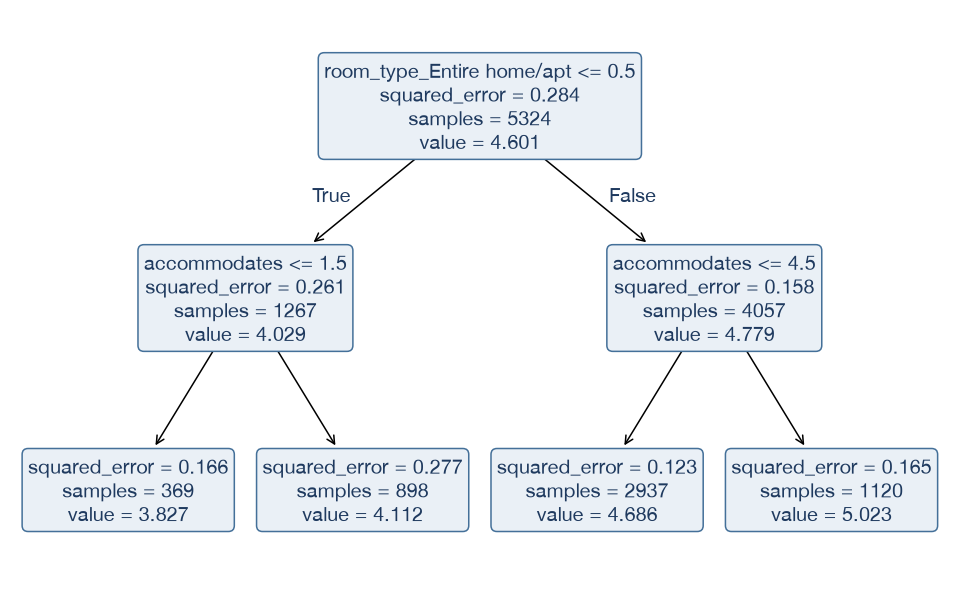
Técnicas Avanzadas de Predicción en Negocios

Se pone en alquiler un alojamiento entero de 4 plazas en Ruzafa.
True: se cumple la condición): ¿qué precio por noche predice?samples, anuncios del nodo, y value, media de log(precio). La columna room_type_Entire home/apt vale 1 para alojamientos enteros.value = 4,686, es decir, unos 108 € por noche.Fuente: Inside Airbnb, Valencia (listados.csv). Misma población y división que los temas 2 y 3, con 5324 anuncios de entrenamiento.
Un árbol de decisión parte el espacio de predictores en regiones y da la misma predicción a todas las observaciones de una región. Un ensamble combina las predicciones de muchos árboles.
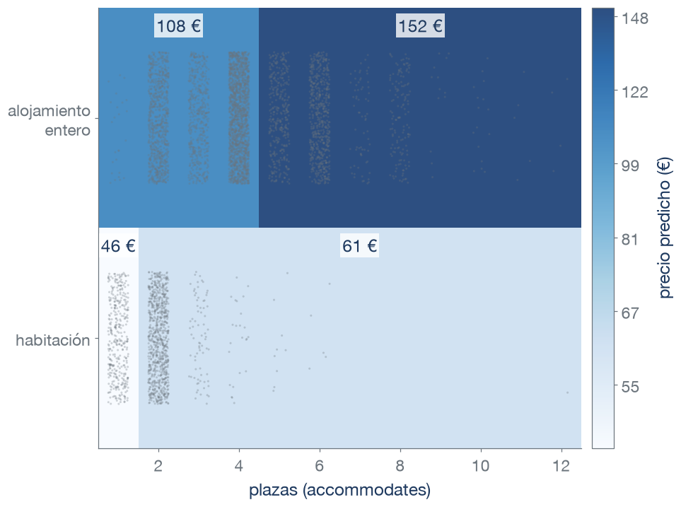
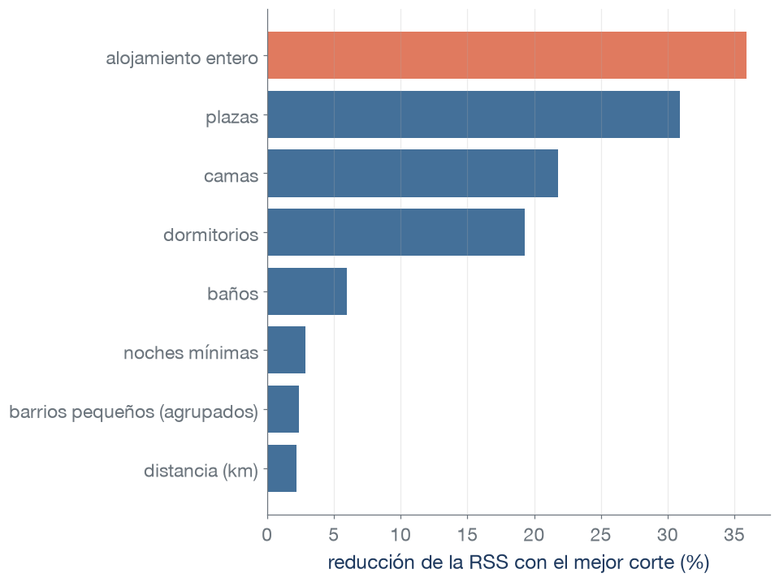
Cada barra muestra la reducción de la RSS de log(precio) que logra el mejor corte de ese predictor, probado solo.
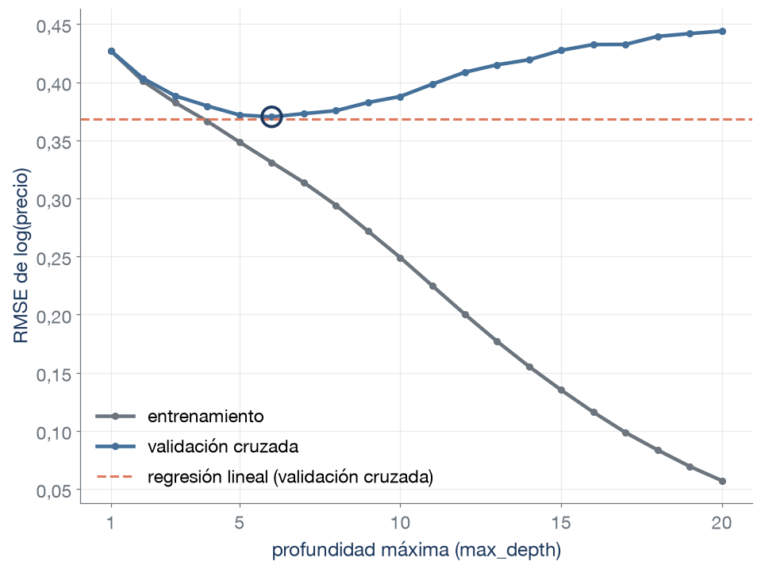
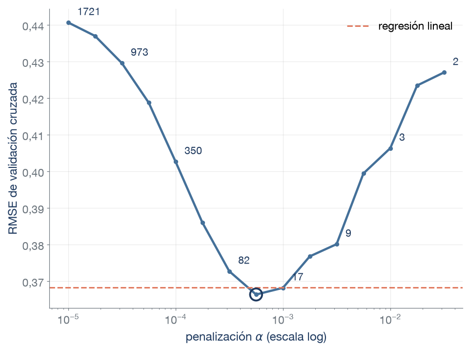
\[\text{RSS}(T) + \alpha \cdot |T|\]
Cada punto es el RMSE medio de las 5 particiones de validación cruzada del conjunto de entrenamiento. Encima, el número de hojas del árbol ajustado con todo el entrenamiento. El mínimo de la curva queda a 2 milésimas de la regresión lineal (RMSE 0,366 y 0,368).
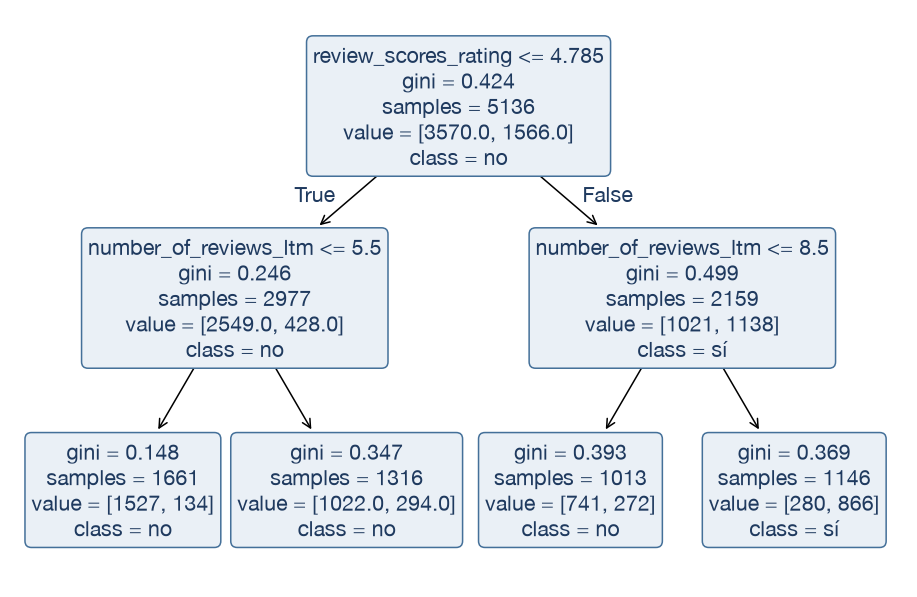
En el modelo lineal estandarizábamos los predictores. ¿Cambiaría el árbol si lo hiciéramos?
DecisionTreeRegressor y DecisionTreeClassifier (sklearn.tree):
| Hiperparámetro | Qué controla | Efecto |
|---|---|---|
criterion |
Medida que minimiza cada corte: squared_error en regresión, gini o entropy en clasificación |
Cambia los cortes elegidos |
max_depth |
Número máximo de cortes seguidos | Más profundidad, árbol más complejo |
max_leaf_nodes |
Número máximo de hojas | Más hojas, árbol más complejo |
min_samples_leaf |
Observaciones mínimas en cada hoja | Más observaciones, árbol más simple |
ccp_alpha |
Penalización \(\alpha\) de la poda | Más \(\alpha\), árbol más simple |
Valores por defecto: max_depth=None, min_samples_leaf=1, ccp_alpha=0 (el árbol crece sin límite).
Remuestreo bootstrap
Se eligen \(n\) observaciones al azar con reemplazamiento entre las \(n\) del conjunto de entrenamiento. Una observación puede aparecer varias veces o ninguna.
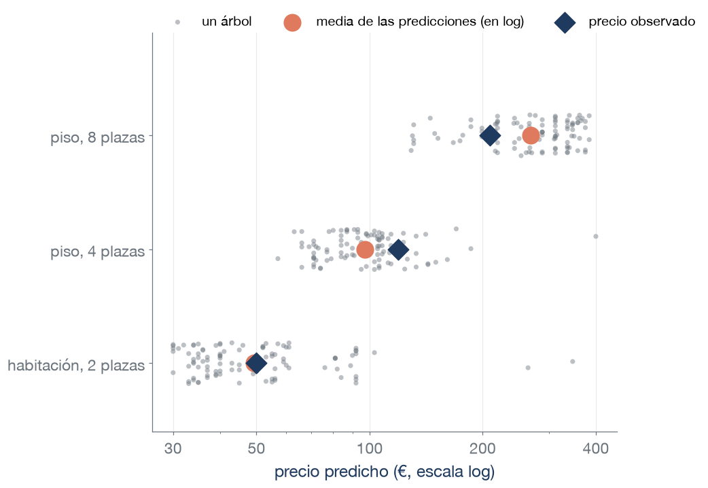
\[\hat f_{\text{bag}}(x) = \frac{1}{B}\sum_{b=1}^{B} \hat f^{*b}(x)\]
Varianza de la media de B árboles
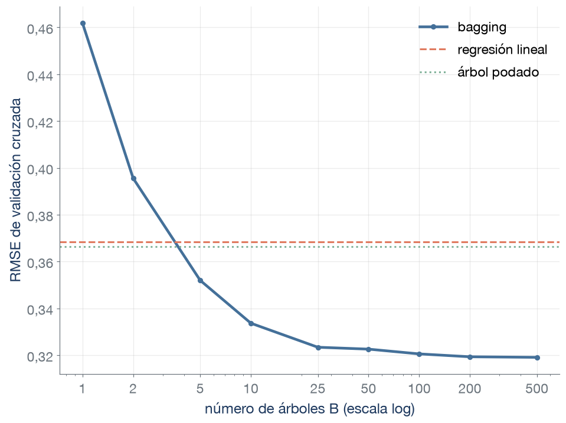
Al añadir árboles, ¿qué término de la varianza baja? ¿Puede el bagging sobreajustar por tener más árboles? ¿Qué se gana al pasar de 100 a 500?
RMSE medio de las 5 particiones de validación cruzada del conjunto de entrenamiento, para el bagging de árboles sin poda.
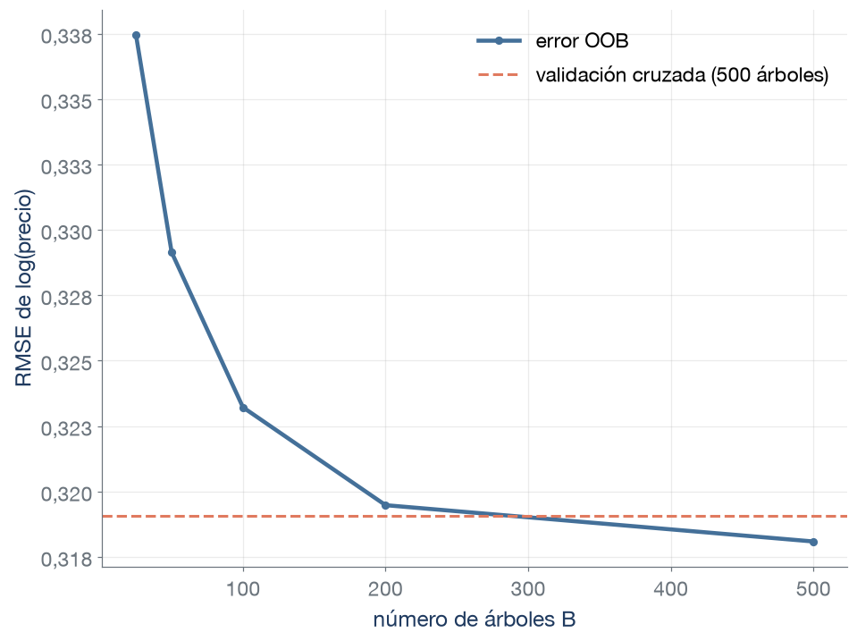
BaggingRegressor y BaggingClassifier (sklearn.ensemble):
| Hiperparámetro | Qué controla | Efecto |
|---|---|---|
estimator |
Estimador que se promedia (por defecto, un árbol de decisión sin límite) | Su complejidad es la de cada término de la media |
n_estimators |
Número B de estimadores | Más estimadores, menos varianza hasta estabilizarse |
max_samples |
Tamaño de cada remuestreo (fracción de n) | Remuestreos menores, estimadores menos parecidos |
bootstrap |
Remuestreo con reemplazamiento (True) o sin él (False) |
En scikit-learn, el error OOB requiere True |
oob_score |
Calcular el error fuera de la bolsa | Guarda oob_prediction_ (regresión) u oob_decision_function_ (clasificación) |
Valores por defecto: n_estimators=10, max_samples=1,0, bootstrap=True, oob_score=False.
En el ejemplo hay 46 columnas. Si cada corte solo puede mirar 4 de ellas, ¿qué le pasa a cada árbol? ¿Y a la media de 500?
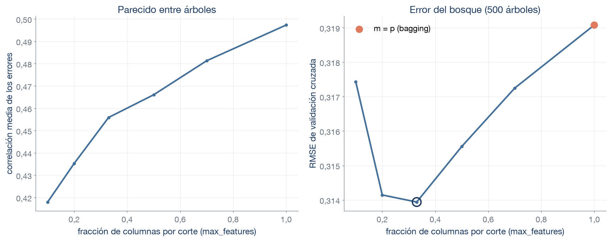
Izquierda: correlación media entre los errores de dos árboles del bosque (100 árboles, una partición), una ilustración de cuánto se parecen. Derecha: RMSE de validación cruzada con 500 árboles. El mínimo (0,314, frente a 0,319 del bagging) está en el 33 % de las columnas (15 de 46).
RandomForestRegressor y RandomForestClassifier (sklearn.ensemble):
| Hiperparámetro | Qué controla | Efecto |
|---|---|---|
n_estimators |
Número de árboles | Más árboles, menos varianza hasta estabilizarse |
max_features |
m: columnas que se sortean en cada corte | Más columnas, árboles más parecidos (con 1,0, bagging) |
max_depth |
Cortes seguidos de cada árbol | Más profundidad, árboles más complejos |
min_samples_leaf |
Observaciones mínimas en cada hoja | Más observaciones, árboles más simples |
oob_score |
Calcular el error fuera de la bolsa | Guarda oob_prediction_ (regresión) u oob_decision_function_ (clasificación) |
class_weight (solo Classifier) |
Peso de cada clase en la impureza | Cambia los cortes de todos los árboles |
Valores por defecto: n_estimators=100, max_features=1,0 en regresión y "sqrt" en clasificación, max_depth=None, oob_score=False.
Se quiere estimar el precio anunciado de alojamientos comparables (entre 30 y 400 € por noche) y explicar de dónde sale la estimación. En parejas (3 min): elegid un modelo, señalad la evidencia de la tabla que lo apoya y una limitación de esa elección.
| Modelo | Hiperparámetro elegido | RMSE de validación cruzada |
|---|---|---|
| Modelo nulo (media de log(precio)) | — | 0,533 |
| Regresión lineal | — | 0,368 |
| Árbol podado | 24 hojas | 0,366 |
| Bagging | 500 árboles | 0,319 |
| Random forest | 500 árboles, m = 15 | 0,314 |
RMSE de validación cruzada de log(precio): errores relativos, con más peso a los grandes. El hiperparámetro de cada modelo se eligió con las mismas particiones.
Más de una elección se puede defender:
| Concepto | Significado | scikit-learn |
|---|---|---|
| Árbol de regresión | Corta el espacio de predictores en regiones y predice la media de la respuesta en cada una | DecisionTreeRegressor |
| Árbol de clasificación | Igual, con la proporción de cada clase en la hoja como probabilidad y la clase mayoritaria como etiqueta | DecisionTreeClassifier |
| Corte | Pregunta \(x_j \le s\) que separa las observaciones de un nodo en dos | tree_.feature, tree_.threshold |
| Hoja | Región final del árbol. Todas sus observaciones reciben la misma predicción | get_n_leaves() |
| Particionamiento binario recursivo | Repite la búsqueda del mejor corte dentro de cada una de las dos regiones que crea el corte anterior | — |
| Algoritmo voraz | Elige en cada paso el corte que más reduce la RSS (o la impureza), sin mirar los siguientes | — |
| Impureza de Gini | \(\sum_k p_k(1-p_k)\), con \(p_k\) la proporción de la clase \(k\) en el nodo | criterion="gini" |
| Concepto | Significado | scikit-learn |
|---|---|---|
| Profundidad | Número máximo de cortes seguidos desde la raíz hasta una hoja | max_depth, get_depth() |
| Poda previa | Limitar el crecimiento del árbol antes del ajuste | max_depth, max_leaf_nodes, min_samples_leaf |
| Poda por coste-complejidad | Elige el subárbol del árbol completo que minimiza RSS + \(\alpha\)·(número de hojas) | ccp_alpha |
| Observaciones por hoja | Mínimo de observaciones en cada hoja | min_samples_leaf |
| RMSE | Raíz del error cuadrático medio (en este tema, de log(precio)) | root_mean_squared_error |
| Concepto | Significado | scikit-learn |
|---|---|---|
| Remuestreo bootstrap | n observaciones elegidas al azar con reemplazamiento entre las n disponibles | bootstrap=True |
| Bagging | Media de las predicciones de B estimadores ajustados con remuestreos bootstrap (en clasificación, media de las probabilidades o voto) | BaggingRegressor, BaggingClassifier |
| Correlación media \(\bar\rho\) | Media de las correlaciones entre las predicciones de cada par de árboles en un punto fijo, al repetir la obtención del conjunto de entrenamiento | — |
| Random forest | Bagging de árboles en el que cada corte se busca entre m columnas elegidas al azar | RandomForestRegressor, RandomForestClassifier |
| m | Número de columnas que se prueban en cada corte (max_features lo fija como número o como fracción) |
max_features |
| Número de árboles | Cuántos árboles se promedian | n_estimators |
| Observaciones fuera de la bolsa (OOB) | Las que no entran en el remuestreo de un árbol (aproximadamente un 37 %) | — |
| Error OOB | Error de las predicciones que promedian solo los árboles que no usaron cada observación | oob_score=True, oob_prediction_ (regresión) u oob_decision_function_ (clasificación) |
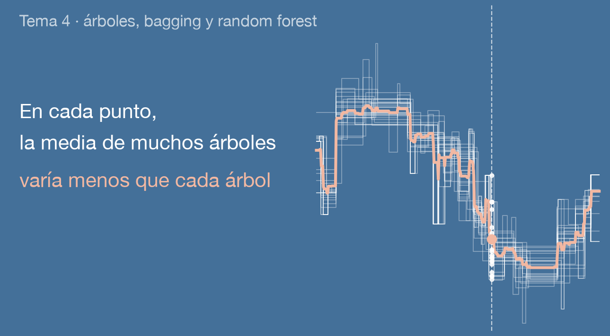